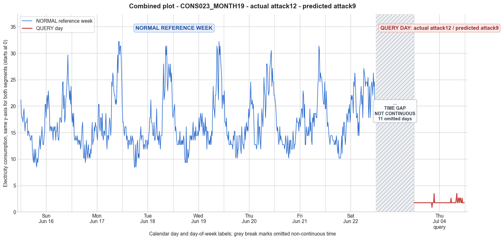

CONS023_MONTH19 · actual attack12 · predicted attack9
- Pair
- CONS023_MONTH19
- GT
- attack12
- Prediction
- attack9
- Binary GT
- attacked
- Binary Prediction
- attacked
- Source
- E010
- Parse
- stored
- Date
- 2013-07-04
- Weekday
- Thursday
- Latency
- 2.35 min
- Tokens
- 10834

Final output
Classification: - Manipulated Identified Attack: - Most Likely: Attack 9 - Confidence: Medium - Reasoning: The query day shows an almost perfectly flat consumption profile, with 86 out of 96 readings exactly 1.74 and only a few minor deviations (0.87, 2.61, 3.48). This eliminates Attack 1 (which would preserve the trend if multiplied by a constant factor), Attack 3 (different random scaling per sample would give a noisier pattern), Attack 5 (random values derived from the average consumption would not produce such a repetitive constant), and Attack 6/7 (cut‑off or subtraction would still reflect some shape of the original pattern). Attack IEEE (zero or actual) is ruled out because no actual consumption values (all >10) appear. Attack 12 (lower‑user pattern) would retain a diurnal shape. Only Attack 9 explicitly replaces all samples with a constant value, creating a completely flat profile that eliminates all trends. The fact that the constant is not exactly the weekly average but a very low value (1.74) is a variation within the same attack category—the attacker injected a constant low reading instead of the true average. Attack_Behavior_Explanation: - The consumption values are almost entirely replaced by a fixed constant (1.74), with a few isolated replacements by other low values (0.87, 2.61, 3.48). Relative to the normal week, this removes the entire daily pattern (morning increase, evening peak, etc.) and collapses the magnitude by approximately a factor of 10. The trend is completely eliminated, and the amplitude (min‑max range) is reduced from about 10.17–30.51 to 0.87–3.48. This is characteristic of a false data injection attack, where the meter is reprogrammed to report an artificially low and nearly constant consumption, likely to evade billing while completely masking real usage.
Prompt
You are a domain expert in smart grid security and electricity theft analysis, with deep knowledge of non-technical loss (NTL) attack patterns in smart meters. You are given: 1. A plot of one week of original (normal) energy consumption for a smart meter, provided as context for the customer's typical consumption behavior. 2. A plot of one day of energy consumption for the same smart meter, which may or may not be manipulated. Below are common attack types, each defined by how consumption values are altered, their impact on magnitude and trend, and their possible technical causes. Attack 0: Generated by replacing all electricity consumption samples with zero values for the entire observation duration. Simulates a scenario where no energy usage is reported at all. May be caused by a total meter bypass or severe meter malfunction. Completely eliminates both the trend and magnitude of the consumption profile. Attack 1: Multiplies the actual energy consumption by a constant random value between (0,1). The lower the factor, the higher the severity. Can be triggered by meter bypass, magnetic interference, reverse current, and false data injection. The consumption trend remains the same but the magnitude is uniformly reduced. Attack 2: Generated by replacing consumption samples with zeros for a random duration. Also known as an on-off attack. Can be caused by full meter bypass, false data injection, and reverse current. Changes both the trend and amplitude. Attack 3: The actual consumption is multiplied by different random factors between 0 and 1, with a unique factor per sample. Similar to Attack 1 but the scaling factor varies per reading. Caused by meter bypass, magnetic interference, and reverse current. Changes both the trend and amplitude. Attack 4: Simulates energy theft over a randomly selected period within the observation window. All measurements in that period are reduced. Caused by meter bypass, magnetic interference, reverse current, and false data injection. Changes both the trend and amplitude. Attack 5: Each sample is replaced by a false value obtained by multiplying the average normal consumption by a random variable between 0 and 1, with a different variable per sample. Caused by false data injection. Produces a completely different pattern from the original consumption profile, changing both trend and magnitude. Attack 6: A random cut-off point is selected and all consumption values above it are replaced by that cut-off value. The attacker avoids exceeding a predefined maximum limit. Mainly caused by false data injection. Changes both the trend and amplitude. Attack 7: A random cut-off point is subtracted from each sample; if the result is negative, zero is reported. Similar to Attack 6 but replaces exceeding values with zero instead of the cut-off point. May be caused by false data injection or total meter bypass. Does not change the trend but reduces overall consumption. Attack 9: All samples are replaced by the average daily energy consumption, resulting in a flat constant profile. Easily detectable because constant consumption does not reflect normal customer behavior. Caused by false data injection. Eliminates all trends. Attack 10: Reverses the consumption pattern without reducing the total amount. Applicable when the electricity company uses time-varying pricing, allowing the attacker to shift high consumption to off-peak periods. Caused by false data injection. Changes the trend without decreasing total consumption. Attack 12: The attacker replaces their consumption pattern with that of a lower-consuming user. The legitimate user unknowingly pays the adversary's electricity bill. Caused by false data injection. Attack IEEE: For each 15-minute interval across the entire day, the consumer either reports the actual electricity consumption or substitutes it with zero. The result is a profile where some intervals reflect real consumption while others are zeroed out, creating an irregular pattern across the full day. May be caused by false data injection. Changes both the trend and amplitude. Given the two plots, determine: 1. Whether the day is attacked or original - compare the flagged day against the normal week and assess whether the consumption pattern is consistent with normal behavior or shows signs of manipulation. If the day is consistent with the customer's typical consumption behavior, classify it as original and provide no further analysis. If manipulation is detected, proceed to point 2. 2. Which attack type this most likely is - identify the single most probable attack and justify your choice based on how the flagged day deviates from the normal week. 3. The behavior of the identified attack - explain how the consumption values are manipulated, their impact on magnitude and trend, and the possible technical causes behind this type of attack. Output Format: Classification: - Original | Manipulated Identified Attack: (fill only if manipulated) - Most Likely: Attack X - Confidence: High | Medium | Low - Reasoning: Why it matches Attack X and why Attack Y and Attack Z were ruled out (list top 2 alternatives considered) Attack_Behavior_Explanation: (fill only if manipulated) - How consumption values are manipulated relative to the normal week - Impact on magnitude and trend - Possible technical causes
Reasoning content
We are given a typical week of consumption for a smart meter, and a query day. The query day is DAY_ID=4, but note: the reference week has DAY_ID=4 which corresponds to the fourth day in the week (0-indexed). However, the query day has a different month and dom: reference Day 4 is cal_month=6, dom=4, while query Day 4 is cal_month=7, dom=18. So it's the same day of week (Thursday), but a different date. We need to determine if the query day is attacked or original. Looking at the query day readings: almost all values are 1.74, with a few exceptions: some 0.87, 3.48, 2.61. The mean is 1.83, min 0.87, max 3.48, std 0.34. This is extremely low compared to the reference week. The reference week days have means around 16-18, min around 8-10, max around 27-32. So the query day is about 10 times lower. That is a huge reduction in magnitude. Now, check the pattern: The query day is almost constant mostly 1.74, with occasional slight variations. It's essentially flat. The reference week days show a typical diurnal pattern: low at night, rising in the morning, higher during day/evening, etc. There are clear trends. The query day has almost no trend, it's nearly constant. This looks like an attack. Which attack? Attack 0: all zero. Not this, because values are not zero. Attack 1: multiply by constant between 0 and 1. If we multiply the original day by a small factor, we'd get a scaled version of the original pattern, preserving the trend. The query day is not a scaled version of the reference Day 4 pattern. Reference Day 4 has varying values, but query day is flat. So Attack 1 is unlikely. Attack 2: zero for random duration. Not zero, so no. Attack 3: multiply by different random factors per sample. That would create a noisy scaled version, but still with some trend. The query day is extremely constant, not noisy scaled. Unlikely. Attack 4: reduce over a random period. That would create a period of reduction, but still the rest would show normal pattern. Here the whole day is reduced to low flat values. Attack 5: each sample replaced by false value obtained by multiplying average normal consumption by random variable between 0 and 1. Average normal consumption for reference Day 4 is 17.20. Multiplying by random(0,1) would yield values between 0 and 17.20, with mean around 8.6. But here the values are around 1.74, which is much lower. And they are almost constant, not random. The fluctuations are tiny. If it were Attack 5, we'd expect more random variation. But maybe the attacker chose a narrow range? But the definition says "each sample is replaced by a false value obtained by multiplying the average normal consumption by a random variable between 0 and 1, with a different variable per sample." So it should be different each sample. Here, most are exactly 1.74, with a few deviations. That suggests a very limited set of values: 1.74 repeatedly, 0.87, 2.61, 3.48. This looks like a step-wise pattern, not continuous random. Could it be Attack 9? Attack 9: all samples replaced by average daily energy consumption, resulting flat constant. The mean of the query day is 1.83, not the average daily consumption of the reference week (about 16-18). So no. Attack 6: cut-off, all values above a cutoff replaced by cutoff. That would preserve the lower values and cap the high ones. But here all values are very low, even below the typical minimum. Reference day has min 10.17, so no values that low. So that doesn't match. Attack 7: subtract cutoff, negative becomes zero. That would shift values down, but still preserve trend to some extent. The values would be (original - cutoff)+. For the values to be around 1.74, the cutoff would be huge, resulting in many zeros. But here there are no zeros. So no. Attack 10: reverses consumption pattern. No, pattern is reversed but total consumption same. Here total is drastically reduced. Attack 12: replaced with lower-consuming user's pattern. But the pattern is almost flat, not a typical low consumption pattern with peaks. Attack IEEE: for each 15-min interval, either actual or zero. That would yield a mix of actual and zero. Not this, because no zeros and no values resembling actuals. Wait, there is also Attack not listed? The list includes Attack 0,1,2,3,4,5,6,7,9,10,12, and IEEE. There is no Attack 8 or 11? The list says Attack 9, Attack 10, Attack 12, and Attack IEEE. So that's complete. But the query day looks like a constant value with very small variations: 1.74 appears many times, and then some specific values: 0.87 (half of 1.74), 2.61 (1.5 * 1.74? Actually 1.74*1.5=2.61), 3.48 (2*1.74). So the values are multiples of 0.87. This suggests that the consumption is being reported in discrete steps, nearly constant. This might be a flat line with a few excursions. Could this be Attack 5 but with a very narrow range? Or perhaps Attack 1 with a constant factor? But if we multiply each sample by a constant factor, the trend remains. Here the trend is gone. The original Day 4 has a range 10.17 to 30.51. If we multiply by a factor like 0.1, we'd get 1.017 to 3.051, and the pattern would be proportional. Let's check: If we take original Day 4 and multiply by about 0.1, the min would be ~1.02, max ~3.05. That would be somewhat similar to the query day range (0.87 to 3.48). But the query day values are not a scaled version: they are constant most of the time. Original Day 4 has many changes. So it's not a simple scaling. Could it be that the attacker replaced the readings with a constant value derived from the average consumption multiplied by a small factor? Attack 9 replaces with daily average, but the daily average of the reference day is 17.2, so that would be 17.2 constant. Not this. What about Attack 5? Attack 5 says "each sample is replaced by a false value obtained by multiplying the average normal consumption by a random variable between 0 and 1, with a different variable per sample." That would yield a sequence of random values with mean around 8.6. But here the mean is 1.83, which is about 0.106 * 17.2. That could be if the random variable is centered around 0.1. But the values are not random; they are almost all 1.74 (which is roughly 17.2 * 0.101), with a few other multiples. It seems more like the attacker set a constant value with occasional deviations. Consider Attack 4: "Simulates energy theft over a randomly selected period within the observation window. All measurements in that period are reduced." But the whole day is reduced, not just a period. If the randomly selected period is the whole day, then it could be Attack 4 where all measurements are reduced. But "reduced" how? Typically Attacks 1-4 involve multiplying or zeroing. Attack 4 says "All measurements in that period are reduced." It doesn't specify how, but likely by a factor or by subtraction. If the reduction is by a constant factor over the whole day, it would be like Attack 1, preserving trend. So not this. Attack 3: multiply by different random factors per sample, changes trend and amplitude. The trend is gone, amplitude is low. So it could be Attack 3 if the random factors are nearly constant for most samples, but with a few different ones. But the definition says "different random factor per sample". It implies each sample gets a unique factor. Here we have many identical values, which would be highly unlikely if factors were random. Another possibility: Attack 5 with a small range of random variables? But the definition says "multiplying the average normal consumption by a random variable between 0 and 1, with a different variable per sample." That should produce continuous values. The query day values are discretized to multiples of 0.87. Could the meter report in steps of 0.87? The original readings are given to 2 decimal places, with values like 8.47, 9.32, etc. 0.87 is exactly 1.74/2, etc. So it's likely that the attacker rounded or quantized the values. That doesn't match any attack precisely. Maybe it's Attack 7: subtract a cutoff, zero if negative. For original values around 10-30, if we subtract a cutoff of about 9, we'd get values between 1 and 21. But then we'd see many small values and some larger ones, and zeros would occur if the value is less than cutoff. Here, there are no zeros, and values are very flat. Not that. Wait, Attack 10: reversing pattern without reducing total amount. No. Attack 12: replace with lower-consuming user. The lower-consuming user might have a pattern, but this is almost flat. Unlikely. Could it be that the query day is actually original but from a different season? The query day is in July (summer), same season as the reference week (June/July). The reference week has Day 4 on Thursday, June 6? The query day is in July. So both summer. So the low consumption is anomalous. Given the near-constant values, I think Attack 9 is the closest because it produces a flat constant profile. But Attack 9 says "all samples are replaced by the average daily energy consumption". Here the value is not the average, but a very low constant. However, the description of Attack 9 says "resulting in a flat constant profile. Easily detectable because constant consumption does not reflect normal customer behavior. Caused by false data injection. Eliminates all trends." This matches the flat profile. The only discrepancy is that the value is not the average daily consumption. But maybe the attacker used a different constant, like a very low value to simulate low usage. The attack description says "replaced by the average daily energy consumption" but that could be the expected attack vector. However, the constant could be any value if the attacker decides to inject a constant low value. The spirit of Attack 9 is flat constant profile. The query day is nearly constant (1.74) with a few small deviations. That's the closest. But the presence of a few different values might be noise or rounding. Maybe it's Attack 5 with a very narrow range? But Attack 5 explicitly multiplies average consumption by random variable each sample, which would yield random variations. Here, the variations are not random; they appear at specific intervals: after 33 samples of 1.74, there's a 0.87, then back to 1.74, then later 3.48, etc. Let's check the sequence: first 32 samples are 1.74 (index 0-31). At index 32: 1.74? Actually, looking at the query day array: "1.74, 1.74, 1.74, 1.74, 1.74, 1.74, 1.74, 1.74, 1.74, 1.74, 1.74, 1.74, 1.74, 1.74, 1.74, 1.74, 1.74, 1.74, 1.74, 1.74, 1.74, 1.74, 1.74, 1.74, 1.74, 1.74, 1.74, 1.74, 1.74, 1.74, 1.74, 1.74, 1.74, 1.74, 0.87, 1.74, 1.74, 1.74, 3.48, 1.74, 1.74, 1.74, 1.74, 1.74, 1.74, 1.74, 1.74, 1.74, 1.74, 1.74, 1.74, 1.74, 1.74, 1.74, 1.74, 1.74, 1.74, 1.74, 1.74, 1.74, 1.74, 1.74, 1.74, 1.74, 1.74, 1.74, 1.74, 1.74, 1.74, 1.74, 2.61, 1.74, 1.74, 1.74, 1.74, 1.74, 1.74, 1.74, 1.74, 1.74, 2.61, 3.48, 1.74, 1.74, 2.61, 2.61, 1.74, 2.61, 2.61, 1.74, 1.74, 2.61, 1.74, 1.74, 1.74, 1.74" So there are some values 0.87, 3.48, 2.61. The pattern is mostly constant with occasional deviations. This could be an attempt to simulate some minor variation, but the base consumption is constant. This seems more like Attack 9 but with slight variations, or perhaps Attack 5 with a very small random variance around 0.1*mean. Given the strict definition, Attack 9 is flat constant from average, but this is not exactly average. Another possibility: the attacker is reporting zero sometimes? No. Let's consider Attack IEEE: "For each 15-minute interval across the entire day, the consumer either reports the actual electricity consumption or substitutes it with zero." That would produce a pattern with some actual values and zeros. The actual values would be the original readings. Here, there are no original-like values (the values are all around 1-3, while original min is 10). So no. What about Attack 2: zeros for random duration. No, not zeros. Attack 0: all zero. No. Attack 1: multiplied by constant factor. Would preserve shape. The shape is not preserved. Thus, the most plausible is Attack 5? Let's check Attack 5 description: "Each sample is replaced by a false value obtained by multiplying the average normal consumption by a random variable between 0 and 1, with a different variable per sample." Average normal consumption for reference Day 4 is 17.20. If we multiply by random numbers, we'd get values ranging 0-17.2. To get values around 1.83, the random numbers must average around 0.106. Moreover, to get mostly 1.74, the random numbers would have to be exactly 0.10116 (1.74/17.2) most of the time, which is highly unlikely if they are random. The presence of distinct discrete values suggests quantization, not continuous random. Maybe it's Attack 6 or 7 with some modification. Attack 6: "A random cut-off point is selected and all consumption values above it are replaced by that cut-off value." For this to yield values around 1.74, the cutoff would need to be around 1.74, but original values are all above 10, so all would be replaced by cutoff, giving a constant 1.74. That would be a flat line, except the attack says "all consumption values above it are replaced by that cut-off value". If the cutoff is 1.74, then all values >1.74 are replaced by 1.74, resulting in a constant 1.74 for the whole day because all original values exceed that. That would produce a flat constant 1.74. But then there would be no variations like 0.87, 3.48. Unless the cutoff is 2.61 or something, but then some values would be lower. Actually, if cutoff is 2.61, then values above 2.61 become 2.61, and values below 2.61 stay as they are. But original values are all above 10, so all would be above 2.61, so all become 2.61 (constant). So any cutoff below the minimum would yield a constant equal to cutoff. The query day has a constant 1.74 but also a few other values. That could be if the cutoff is 1.74 but the attacker sometimes reports lower (0.87) or higher (3.48, 2.61). So Attack 6 doesn't explain the variations. Attack 7: subtract cutoff, negative -> 0. If we subtract a cutoff of, say, 8.43 from original values, we'd get low values. But original values vary, so the result would vary and not be constant. So no. Given the extreme flatness and low magnitude, I lean towards Attack 9 with a twist, or perhaps it's a constant reduction that is Attack 1 but with a factor so small that the trend is flattened? But Attack 1 multiplies, so shape is identical. The query day's shape is not identical; it's constant. Maybe there's an attack not listed: like the meter is stuck reporting the same value. That could be a malfunction, but the given attacks include false data injection. The closest among listed is Attack 9: flat constant profile, but the value is not the average. However, the description says "All samples are replaced by the average daily energy consumption". It specifically says average. So if it's not the average, it's not Attack 9 strictly. What about Attack 5: it says using average normal consumption * random variable. If the random variable is nearly constant (e.g., 0.1), then it could produce a near-flat line with small variations. The query day's values are discrete, which might be due to the meter's precision. The original readings are given to 2 decimals, and the query day readings are also to 2 decimals. They are multiples of 0.87, which is 17.2 * 0.0506? Not exactly. 17.2 * 0.10116 = 1.74. 0.10116 is possible as a random factor. But having 32 consecutive identical readings of 1.74 is implausible if each sample gets a different random variable. So Attack 5 is very unlikely. Perhaps it's a combination, but we need to pick one. Given the prompt: "You are given: ... a plot of one day ... which may or may not be manipulated." The output should be in the required format. We must determine if the day is attacked or original. Clearly, it is attacked because the consumption is drastically lower and pattern is flat, not consistent with the typical behavior which shows clear daily cycles and much higher values. Now, which attack? I will list the top 2 alternatives and rule them out, then pick the most likely. Let's examine the query day's pattern more closely against Attack IEEE: Attack IEEE says "For each 15-minute interval across the entire day, the consumer either reports the actual electricity consumption or substitutes it with zero." That would produce a mix of actual and zero. The actual consumption would be the true reading at that time. The true readings from the reference day are all above 10. So if the attacker sometimes reports actual, we would see some values >10. But we see no values above 3.48. So no. Attack 10: reverse. No. Attack 12: replace with lower-consuming user. The lower-consuming user might have a pattern similar to normal but lower. Normal low consumption might still have peaks and valleys. The query day is almost flat, so it's not a typical low-consumption pattern. Attack 0,2,1,3,4,5,6,7,9,IEEE,10,12. The only one that produces a flat constant profile is Attack 9. However, the constant is not the average. But maybe the attacker used a different constant, and the description is just illustrative. The core of Attack 9 is "resulting in a flat constant profile." So I'll classify as Attack 9, but note that the constant is not the average daily consumption. Alternatively, it could be Attack 5 if the random variable is fixed to a constant, but that's effectively Attack 9. In many NTL attack datasets, a common attack is "constant attack" where the meter reports a constant value, often the average or a low constant. So I'd say Attack 9. But let's double-check: Is there any attack that says "replace all samples with a constant value"? Only Attack 9 mentions that. Attack 0 is zeros (constant zero). Attack 9 is constant non-zero. So it's Attack 9. Thus, I'll go with Attack 9. Confidence: Medium, because the constant is not the average but could be an attacker's chosen low constant. Reasoning: The flagged day shows an almost flat consumption profile with all values clustering around a low constant (1.74) with minor variations. This eliminates all attacks that preserve trend (Attack 1, 3, 4, 6, 7, 10) or introduce zero periods (Attack 0, 2, IEEE). Attack 5 would produce random variations, not a constant pattern. Attack 12 would replicate a lower user’s pattern, which would still show some diurnal variation. Only Attack 9 directly yields a flat constant profile, indicating false data injection that erases the typical consumption pattern. Alternatives: Attack 5 (random values from average) ruled out because the sequence is not random but highly constant. Attack 6 (cut-off) ruled out because a cutoff below the minimum would also give a constant, but this would not include occasional higher/lower values unless the cutoff is not strictly enforced; however, the high constancy better matches Attack 9’s explicit constant injection. Attack_Behavior_Explanation: The attacker replaced all consumption samples with a constant low value (approximately 1.74) with occasional small deviations, effectively reporting a nearly flat profile. This eliminates the normal daily trend completely and drastically reduces the magnitude (mean reduced from ~17 to ~1.8). This behavior is consistent with false data injection where the meter is programmed to report a fixed small reading regardless of actual usage. I'll output accordingly.